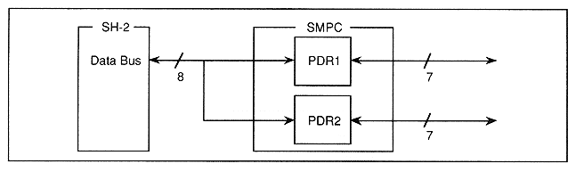

Figure 3.21 shows a block diagram of the SH-2 direct mode. SH-2 can directly access peripherals via two I / O port data registers (PDR1, PDR2) in SMPC.
Figure 3.21 SH-2 direct mode block diagram

● Features
This mode is an effective method in the following cases.
When controlling a peripheral that requires faster access than can be accessed in SMPC control mode
When data output is required for
peripheral
When access is required to a peripheral that requires an external latch
When you need to access a peripheral that is not supported by SMPC